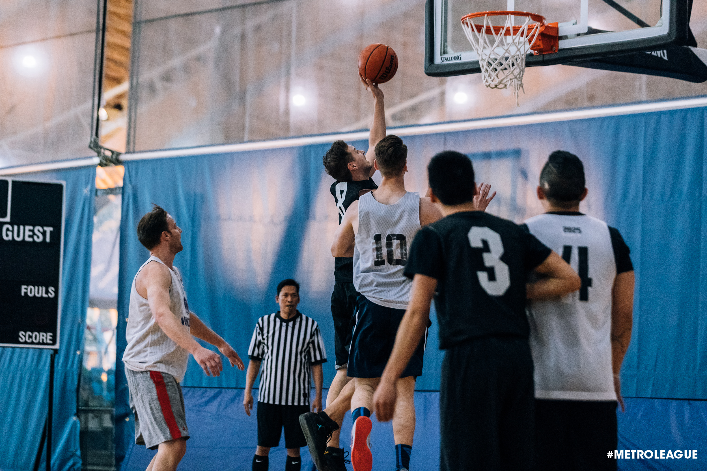
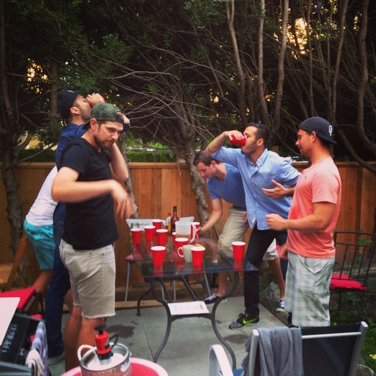
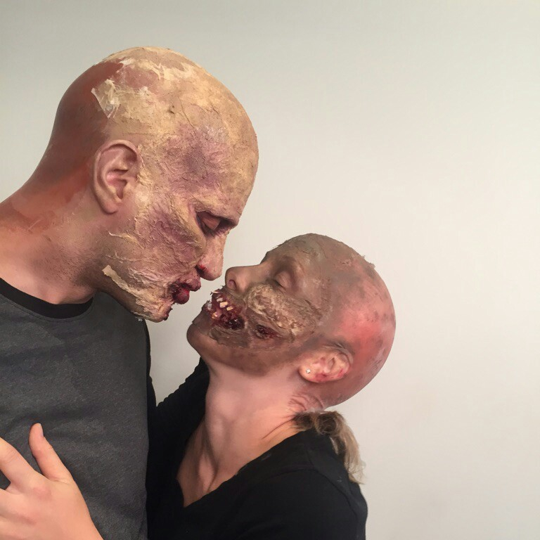
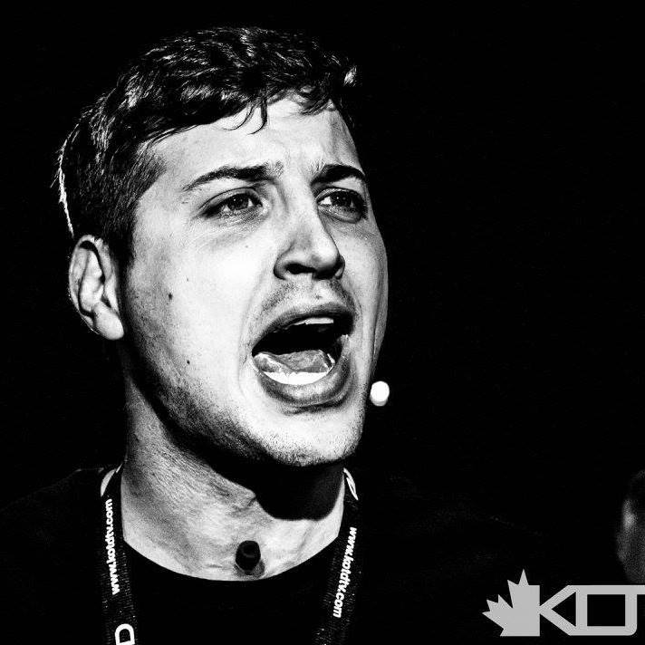

Daniel Maczko
About me
My name is Daniel Maczko. I live and have lived in Vancouver for mostly my entire life.
After attending the high school Lord Byng for grade eight, my parents shipped me off to Shawnigan Lake
boarding school where I finished high school. I went to UBC after that and graduated with a BA in
philosophy. Although I have a passion for philosophy and find it incredibly interesting, I found that
there were relatively limited career options after graduating - or at least none that interested me.
After being in the work force for a few years, I decided to pursue what I think is the most intriguing
industry of our time which is computer science and information technology. I have always been a big computer nerd,
have a passion for video games, and find the world of programming fascinating. I'm a big fan of speedrunning video games,
which is where, simply put, people beat a given video game as quickly as possible. They do this by carefully routing runs,
disecting code, and manipulating random number generation which I believe are all related to computer science.
I shopped around and found that BCIT offerred the best looking program in terms of length of program and finding a
good job and career after completing it. I eventually want to transition into network security, and figured this would be the best starting point.
Something interesting, and admittedly strange, about me is that I'm a battle rapper who has battled all
across Canada and North America. If you don't know what battle rap is it's kind of like competitive slam
poetry, or if you've seen the movie 8 Mile then that's a good reference point. I've decided to recently
limit the number of performances I do as I'm putting all my efforts into this program and my career, but
will still do it a few times a year just to stay sharp.

Metro Vancouver Basketball. Driving to the bucket.

A little flipcup with the boys

Zombie love. Make up in full effect.

On stage at the Red Room isn Gastown.